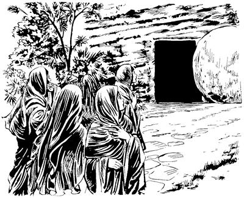

Yesus nen kamag taogti, imag yingkiogha
16:1-20
Yesus nen kamag taogha
(Matius 28:1-10; Lukas 24:1-12; Yohanes 20:1-10)
16
1 Yesus tebaog sumeneko Yusupti Yesus teptoba kirik lom hogtobaag pibogpa, ae imbaog. Iniplamog abeneko pere Yahudi nimi sembe tek-tek papto Allah yubu lerop sum taogpa, ik nhon wamekpa, nen imbaog. Imbaogpa, sumeneko inipnag aneko Maria Magdala kelenekoap, Yakobus ilin Maria kelenekoap, Salome kelenekoap sin kelabo wilindi abenekori, “Yesus nong teptoba song taleagti, song wali mag elag pelaghukap,” sembamek. “Heng walelingkileba, elag pelaghukap,” aro inipnag aneko song wali mag kamna kapto tol piek. 2 Tol piekti, kweleknag aneko lukunap sin Yesus kirik lom hogtobaag piboghag aneko piek.3 Inaag palamekti, sin mamun hail talamekti, “Kirik nubunge ina siramag maruktoba aneko etneri yepto pemagto kolbatsilul,” aba palamek. 4 “Kirik aneko nubu sirikti,” aba palamekti, pina kemelamekag agha kirik aneko pemagto koloropba ina siram kuptoba ibek.

5 Ina siram kuptop wamogpa, wa'ina sae sirik sip kemelamekpa, kabuni me nhon ag siliro pelengka urop ag kororopne wangkamogti, pukamog. Pukamogpa ibekti, sin lo'om seek. 6 Lo'om seekpa, kabuni me anekori sinag yubu lelamogti, “Log sembaheng kom! Na elwamnange Yesus Nasaretne amni kalag siplobongne poneko elamlom. El tane wamla kom. El nen kamag tal! A'undi babe kembalulom! El pibongagna ane. 7 Wene pimundi, yubu nene Eldi yubu ka'ero neleptopnangag ambatsumundi, Petrusag babe ambatlulom. Ambarelamsumundi, ‘Yesus sam mog so'o Galilea palamlaba, a'un babe Galilea pululom. Eldi samenag ambarelamsio saog uro, Galilea pimundi haiptalulom,’ aro ambarel phululom,” aro ambatsiog.
8 Wene aro ambatsiogpa, kirik lom hogtobag Yesus piboghag anekoa lambaekti, merero palamek. Sin logti nimi nhon babe ambatsin koma merero piek.
Yesus nimi whingag lag taogha
(Matius 28:9-10; Yohanes 20:11-23)
9 Selek sum anekoa lukunap Yesus tebaogha nen kamag taogti, samenagne Maria Magdala keleneko whingag lag taog.
Maria Magdala kelenena, samenag Yesus anam teban komag phia saekpare el kulomag wamekpa, Yesusti keleneko wali nenero phia yag lambahiogpa, wali taog kel.
10-11 Magdala keleneko whingag Yesus lag taogpa, kelenekori sin samenag Yesusag nelepto elap nhon ul palamek nimi ambarel phiogpa, haiptaek. Haiptaekti, sikin engero amang ulamekag kelenekori, “Yesus nen kamag taldi, nanag lag talba imna,” aro ambatsiog aghana, sik sembaek kom.
12 Ambatsiogne sik sembaek kom aghana, sumeneko babe Yesus elkabo phende as nhonag palamdek. Palamdekpa Yesus sin whingag lag taog aghana, Yesus nong a'erop saogne agha lag taog. 13 Lag taogpa, sin phende sikinkabo wamekag saombarekti, ambarelamsirek aghana, sin phende abenekori yubu lelamdekne babe sinkabori sik sembaek kom.
(Matius 16:1-20; Lukas 24:39-49; Pogsiognang 1:6-8)
14 Ambarelamsirekpa seneragto lelamekti, Yesusti wepto pogsiognang ko'olombarenang taneko kwaneng telamek. Kwaneng telamekpa, Yesus sin whingag lag taog. Lag taogti, sinag yubu lelamogti, “Nimi etpare anekori na sembe, ‘Nen kamag talba, imna,’ aro a'unag ambarelamsiang. Sa'ambe a'un usog mikipti sik senelamlom kom,” aro wembahiog.
15 Wene aro wembahiogti, tipto ambarelamsiogti, “Nimi tala-tala wamangneag pimundi, yubu walinge ‘Allahri Yesus pere agha mog so'oag nimi taluro saelbamsil,’ aro nimi niag ambarel phululom. 16 Nimi etneri, ‘Yesusag sikne aro seneraglamna ane sembe maghag pelengkipnululam,’ aro ulamle tanena, nimi eneko Allahri taluro wali nembalul. Ot nimi etneri na Yesusag sikne aro seneraglamla kom tanena, Allahri nimi enekoag tam ikinne pipleri, oplul. 17-18 Sin na Yesusag sikne aro seneraglamik nimiri kekneba ulamukang. Kekneba ulamiknena, Na Yesus mikipne sin pere agha ulamneba, phia yonge yag lanalamsukang. Sin ekon yubu ka'eptanep kom yubuag lelamukang. Sindi ya'ag ohirop phae saelbaika babe, nimi ya'ag ohirop mag telamika babe, sin tebaukang kom. Sindi nimi naiktopne nong alibag sae palilamsiikpa, Allahri nimi taneko wali nenelamsilul. Nanag sikne aro seneraglamik nimiri undo unulamik tanena, ‘Yesusti mikipne sin pere agha ulamla,’ aro el tanep,” seog.
Yesus imag yingkiogha
19 Wene aro ambatsiogpa, Nuni Allahri imag agha nu Saelba Uhiropne Yesus kiliro tobog. Kiliro tobogpa, “Nikag nun niri saelbamsununam,” aro Allah sae sirik sip pulingkiogti wamla.
20 Nuni Allahri imag agha kiliro tobogpa, Yesusti yubu ka'ero neleptop nimi tanekori as tala-tala nimiag yubu walinge Yesus sembe ambarel phiek. Ambarel palamsiekpa, nu Saelba Uhiropne Yesusti mikip nenelamsiogpa, kekneba maikno ulamek. Kekneba ulameknena, nimiri kembi agha, “ ‘Imagne ponekori sin pere agha ulamla tanena, Imagneri yubu sikne ambarelamsiang,’ sembaukang” aro kekneba maikno ulamekti ambarelamsiek.
Abenda.